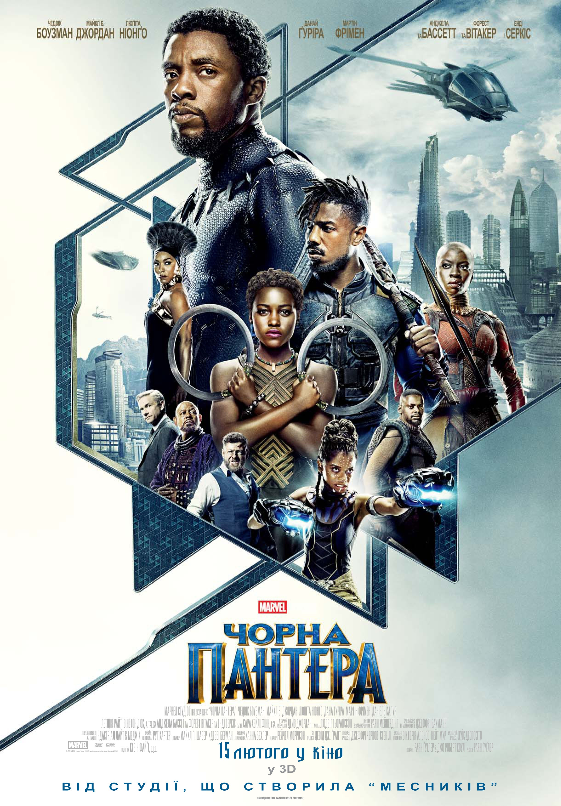
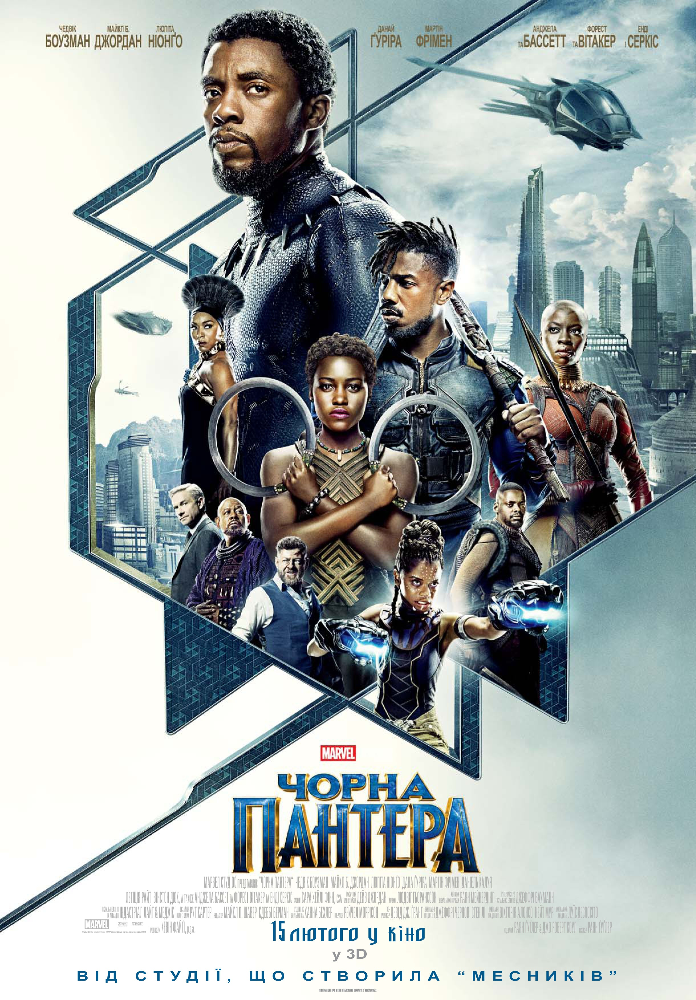
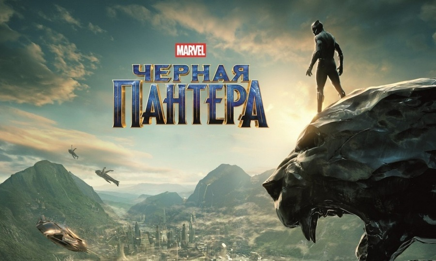
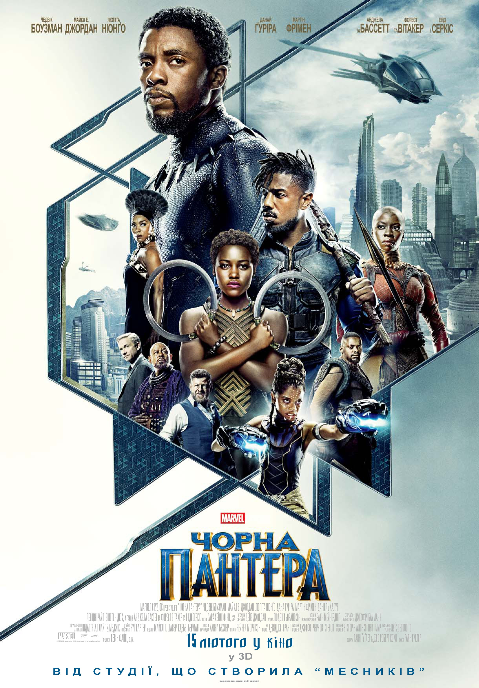

«Чорна Пантера» (англ. Black Panther) — американський супергеройський фільм на основі однойменних коміксів видавництва Marvel Comics, виробництва Marvel Studios і дистрибуції Walt Disney Studios Motion Picture.

Тисячоліття тому п'ять африканських племен воювали за метеорит, що містить вібраніум. Один з воїнів проковтнув «серцеподібну траву», яка була вражена металом, і отримав надлюдські здібності. Він став першою «Чорною Пантерою» і об'єднав всі племена (крім племені Джабарі), щоб сформувати народ Ваканди. Згодом вакандци навчилися використовувати вібраніум для розробки передових технологій і ізолювали себе від світу, видаючи себе за малорозвинену країну.
У 1992 році король Т'Чака відправляється в Окленд, щоб відвідати свого брата, Н'Джобу. Торговець зброєю на чорному ринку Улісс Кло проникає в Ваканду і краде вібраніум, а Т'Чака звинувачує Н'Джобу допомоги йому. Друг Н'Джобу показує, що він - Зурі, ще один таємний вакандец, і підтверджує підозри Т'Чакі.
У наші дні, після смерті Т'Чакі від рук Гельмута Земо і громадянської війни Месників, його син Т'Чалла повинен повернуться в Ваканду, щоб зайняти трон. Він і Окою, керівник Дора Міладже, відправляються в Нігерію щоб виручити і запросити його колишню кохану Накію, щоб вона могла бути присутнім на його коронації, разом з його матір'ю Рамондой і молодшою сестрою Шури. На церемонії лідер племені Джабарі М'Баку кидає виклик Т'Чалле, пропонуючи бій за корону. Т'Чалла перемагає М'Баку і переконує його здатися, а не померти.
